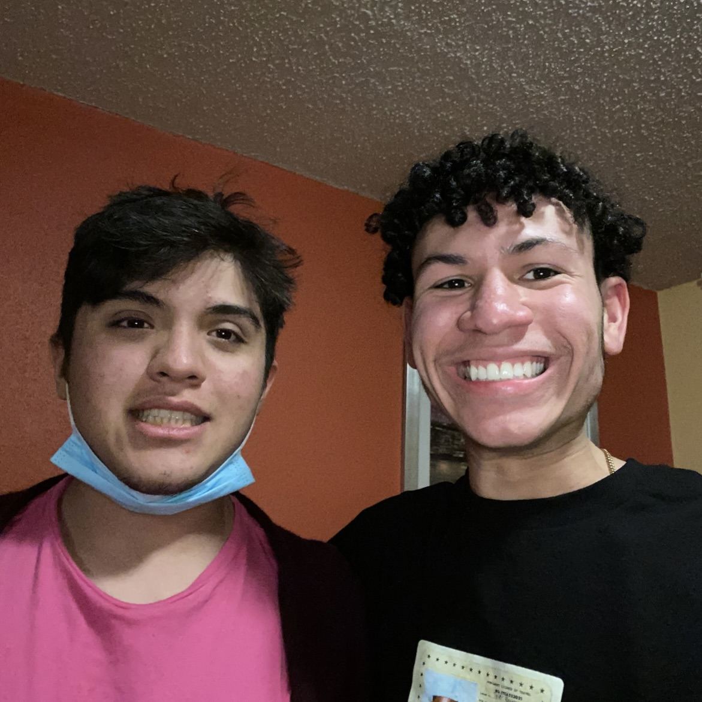

Tyrone's Journey
Meet Tyrone, a dedicated and ambitious 22-year-old who has climbed the ranks at Chipotle with unwavering determination and hard work. Starting his career five years ago as a crew member, Tyrone quickly made a name for himself with his strong work ethic, positive attitude, and commitment to learning every aspect of the business.
His journey is a testament to his resilience and drive. After excelling as a crew member, Tyrone earned his first promotion to Kitchen Manager, where he mastered the complexities of food preparation, safety protocols, and team management. His skills and leadership qualities didn’t go unnoticed, and soon, he was promoted again to Service Manager, where he honed his abilities in customer service and front-of-house operations.
Currently serving as an Apprentice at Chipotle, Tyrone is on the fast track to becoming a General Manager. His ability to adapt, learn, and lead has set him apart as a standout member of the team, and he is poised to take on the responsibilities of a General Manager very soon. Tyrone’s story is an inspiring example of how dedication and a commitment to personal growth can pave the way for incredible career opportunities.
Tyrone’s ultimate goal is not just to succeed within the company, but also to mentor and inspire others to pursue their own career ambitions. He believes in the power of perseverance and hopes to one day lead a team that embodies the same values of hard work and positivity that have guided him throughout his journey.